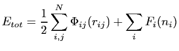

The energy in potentials of the Embedded Atom type consitsts of two parts, a pair potential term specifyed by the function Φ(r) representing the electrostatic core-core repulsion, and a cohesive term specifyed by the function F(n) representing the energy the ion core gets when it is "embedded" in the "Electron Sea". This Embedding Energy is a function of the local electron density, which in turn is constructed as a superposition of contributions from neighboring atoms. This electron transfer is specifyed by the function ρ(r).
The embedding function Fi(n) depends on the type of the embedded atom, the transfer function ρj(r) depends on the type j of the donating atom, whereas the pair potential Φij(r) depends on the types i and j of both atoms involved. All potential functions are given in a single file, whose format is described above above
The Embedded Atom Method (EAM) for IMD was implemented by Erik Bitzek. It was adapted for use in potfit by Peter Brommer.
The Embedded Atom Method was suggested by Daw and Baskes (M. S. Daw and M. I. Baskes, Phys. Rev. B 29, 6443 (1984); S. M. Foiles, M. I. Baskes, and M. S. Daw, Phys. Rev. B 33, 7983 (1986)) as a way to overcome the main problem with two-body potentials: the coordination independence of the bond strength, while still being acceptable fast (about 2 times slower than pair potentials).
Ideas from the Density Functional Theory or the Tight Binding formalism may lead to the following form for the total energy:
While an identification of the pair potential term Φij(rij) with the electrostatic core-core repulsion, and of the cohesive term Fi(ni) with the energy the ion core gets when it is "embedded" in the local electron density ni may be tempting, it is nevertheless without physical justification. Due to invariance properties of the EAM potential, a embedding energy term linear in the "electron" density can be described by pair interactions, thus shifting contributions between embedding and pair energy. So an isolated consideration of either part is not possible - physical relevance only lies in the combination of both.
The local electron density is constructed as a superposition of contributions ρj(rij) from neighboring atoms.
Also belonging to this analytical form are models like the glue model, and the Finnis-Sinclair potentials.